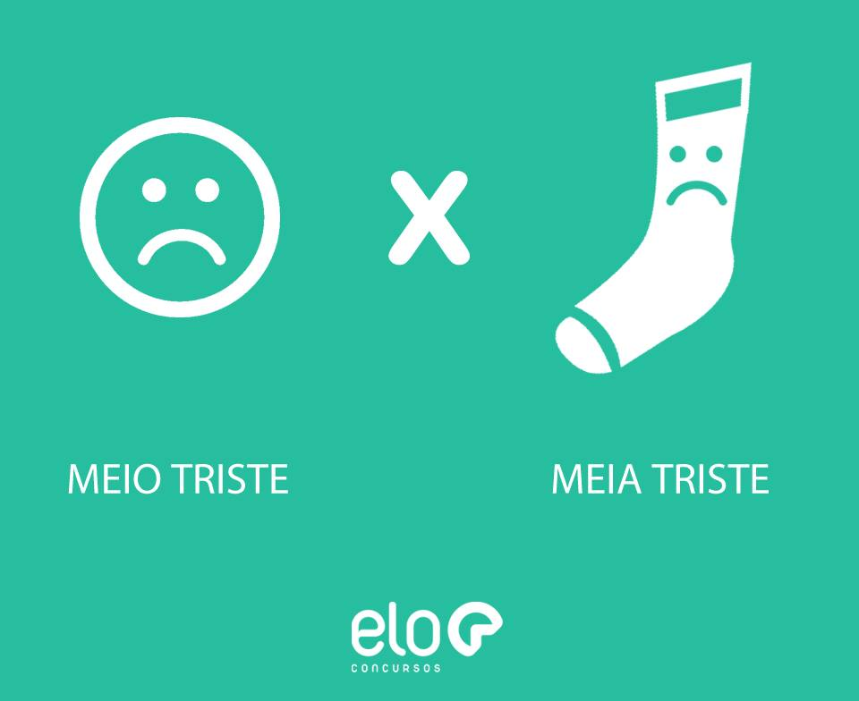
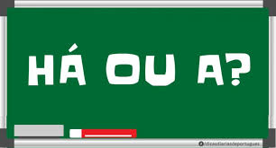
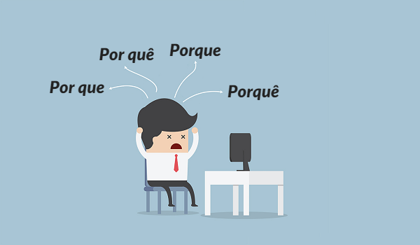
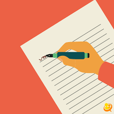

|  |
Meio deve ser utilizado quando se deseja expressar “um pouco” ou “mais ou menos. Já o termo meia deve ser utilizado quando se trata de “metade”. Exemplos: João é meio atrapalhado. Já tomamos meia xícara de café. |
|
A palavra mas é corretamente usada quando se deseja expressar “porém”, “contudo” ou “todavia”. Por outro lado, o termo mais indica aumento e corresponde ao contrário de “menos”. Exemplos: Achou que iria ganhar um carro, mas não ganhou. Eu fiz mais pontos que meu adversário. |
|  |
O termo há deve ser utilizado quando se deseja expressar o verbo haver, com sentido de tempo decorrido, algo passado. Já o termo a deve ser empregado quando não se tratar de tempo passado ou decorrido. Exemplos: Estudei esse assunto há muito tempo. Devo chegar daqui a pouco. |
|
O porque junto deve ser utilizado quando o desejo é dar uma explicação. Geralmente pode ser substituída, mantendo seu significado, pelos termos: “pois”, “uma vez que” e “para que”. Exemplo: Não fui ao futebol porque estava cansado. |
 |
|
O porquê junto com acento circunflexo deve ser utilizado quando significar "causa", "razão", "motivo" ou "circunstância". |
|
O por que separado pode ser utilizado em duas situações. Quando for a junção da preposição por + pronome interrogativo ou
indefinido que, nesse caso sendo equivalente aos termos “por qual razão”ou “por qual motivo”. Ou quando for a junção da
preposição por + pronome relativo que, nesse caso equivalente a “pelo qual”.Exemplos: |
|
O por quê separado com acento circunflexo é referente à junção da preposição por + o pronome interrogativo quê. Ocorre quando
o termo aparece no final da frase acompanhado de um ponto.
|
|
Interpretação de texto é certamente é o tema que permeia todo o exame, não só a prova de Linguagens e Códigos. Por isso, fique atento e leia bastante para treinar a habilidade da compreensão textual; |
|
Gênero textual é um tema indispensável. Na prova do Enem você encontrar poemas, charges, artigos de opinião e até mesmo obras de artes. |
|
O conhecimento da cronologia da Literatura Brasileira, ou seja, a ordem em que as escolas literárias aparecem e como se dá sua classificação, pelo estilo e época (correntes literárias), é um tema relevante para a prova do Enem |
|  |
Para que uma redação possa ser desenvolvida de maneira satisfatória, ela precisa ter, no mínimo, quatro parágrafos, divididos em introdução, desenvolvimento e conclusão. |
|
Treine redação. Quem quer tirar nota mil na redação do Enem precisa treinar muito. Escreva sobre qualquer assunto, pelo menos, uma página todos os dias. |
|
Organize o texto com coerência e, principalmente, com começo, meio e fim. Para isso é preciso fazer um plano de redação, que nada mais é do que um guia que orienta a escrita dentro do tema proposto. As partes do texto precisam conversar entre si. |
|
Esteja atualizado. Em geral, o tema da redação é algo da atualidade. Estar em dia com a leitura é fundamental. É preciso ler jornais, sites e revistas, até para não ser surpreendido por um assunto do qual nunca ouviu falar. |